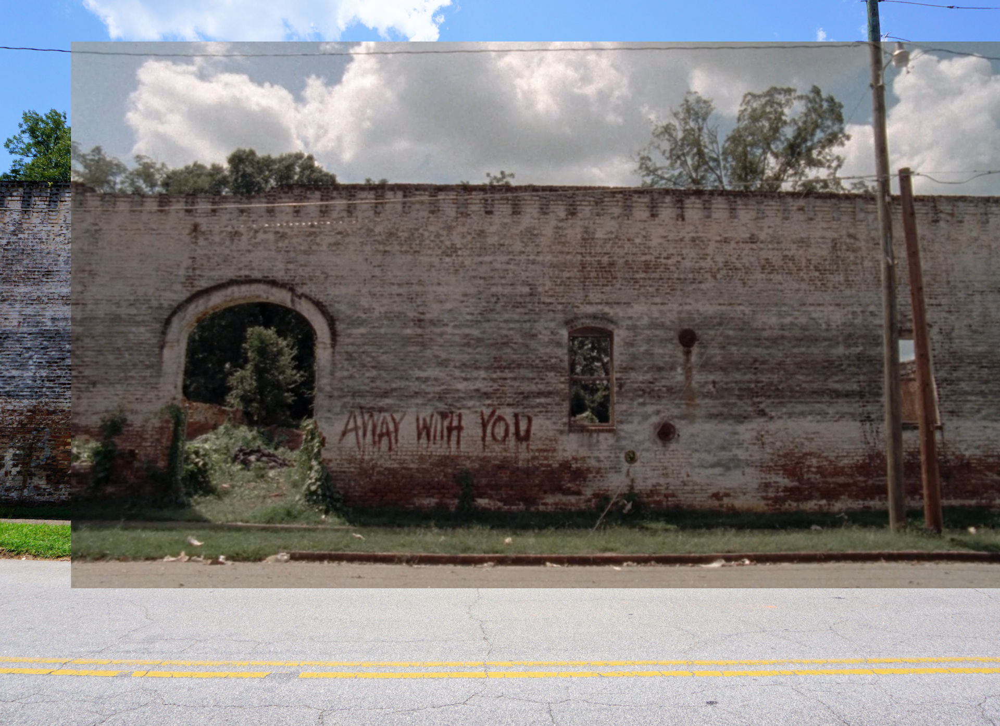
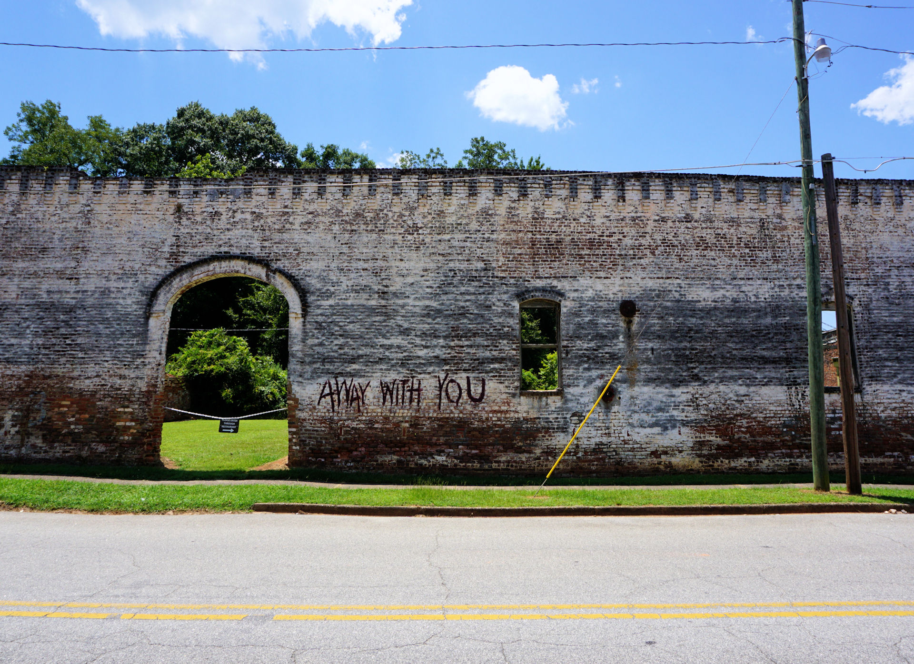

 
Away With You (1)
Away With You (2)
Away With You (3)
No Guilt
Morgan's Maze
Morgan on Rooftop
Cafe (1)
Cafe (2)
Railway Feast
Downtown Woodbury
Guarding Woodbury
Attacking Woodbury
Alexandria Tunnel
Approaching Alexandria
Creepy Road (1)
Creepy Road (2)
Pink Chair
Jesus
Creepy Road (Rick)
Photo
Film